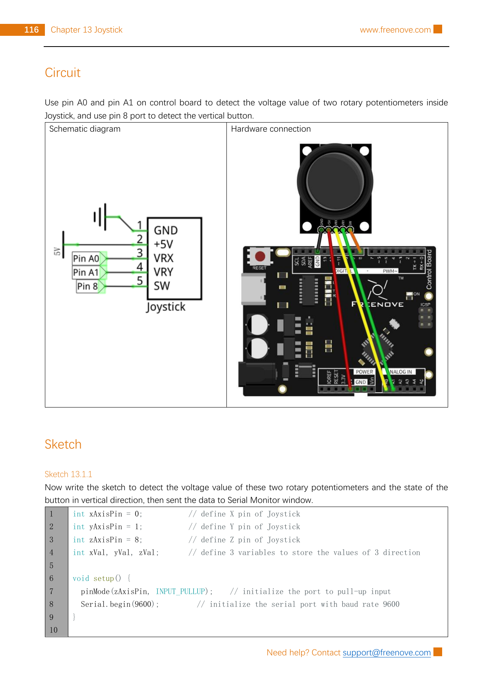

Wire a Freenove-style joystick module to an Uno-compatible board, read its X and Y positions, and tell when its built-in switch is pressed.
Gather the parts
Uno-compatible board and USB cable
Freenove-style five-pin joystick module
5 female-to-male jumper wires
Before you start: this is a low-voltage, USB-powered sensor experiment. Work on a dry, non-metal surface. Disconnect USB before moving a wire, follow the printed pin labels rather than wire colors, and never connect the module to mains power. Stop if your joystick has different labels or more/fewer than five pins: use its own documentation instead of guessing.
Build it, one check at a time
Step 1 — Meet the three controls
The stick contains two small potentiometers at right angles. Tilting changes two voltages: VRx for one direction and VRy for the other. Pushing the stick down uses a separate switch named SW. That means this one module gives two analog readings and one digital reading.

Reference circuit page: Freenove, Tutorial.pdf, Chapter 13, Project 13.1, printed page 116 / PDF page 120. Reused unchanged under CC BY-NC-SA 3.0; its public source page is linked in Reference pages.
Step 2 — Connect power by label
With USB unplugged, connect joystick GND → Arduino GND and joystick +5V → Arduino 5V. Match the labels exactly. Reversing power can damage the module, so do not plug in until both power paths are checked.
Step 3 — Add the three signal paths
Connect VRx → Arduino A0, VRy → Arduino A1, and SW → Arduino D8. A0 and A1 measure the changing joystick voltages; D8 will read the push switch. On a classic Uno, an analog reading is a number from 0 to 1023, but the resting number can vary a little between modules. Do not assume it will be exactly 512.
Pause: leave D8 connected only to SW. The sketch enables Arduino’s internal pull-up resistor, so the switch is normally HIGH and reads LOW only while it is pressed.
Step 4 — Upload a direction reader
Reconnect USB, select your Uno-compatible board and port in Arduino IDE, and upload this original sketch. Keep the joystick untouched while it starts: it records the starting X and Y values as its center. A dead zone of 80 prevents small resting wiggles from being reported as a direction. The source uses the same A0, A1, D8, INPUT_PULLUP, 9600-baud serial, and 200 ms sampling pattern.
Open Tools → Serial Monitor and select 9600 baud. You should see changing X and Y numbers as you tilt the stick, plus PRESSED only while you push it down. The words LEFT/RIGHT and UP/DOWN depend on the module’s physical orientation; the raw numbers are the important evidence. If a direction appears reversed, do not move wires—change only the labels in the sketch after confirming the reference wiring.
If there is no output, check the selected board, port, and 9600 baud setting. If every value is stuck, unplug USB before checking the five labeled paths. If a direction appears while untouched, reset the board with the stick released and centered; then, if needed, increase deadZone a little. This reader is for learning and serial observation, not for steering a vehicle, controlling machinery, or any safety-critical device.
Tiny challenge
First predict which number will change when you tilt left, then test it. Change deadZone from 80 to 120, restart with the stick centered, and explain why the direction labels become less sensitive.
The local reference page is an unchanged Freenove Chapter 13 circuit page used under CC BY-NC-SA 3.0 with visible attribution. The learner-facing explanation and center-calibrated dead-zone sketch are original. Technical pins and switch behavior were checked against the retained Freenove source pack and public Chapter 13 page.